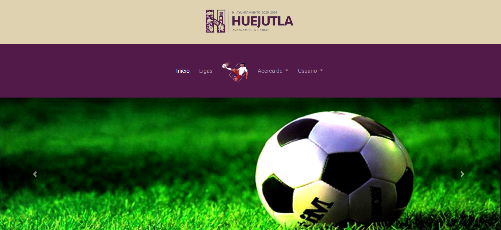
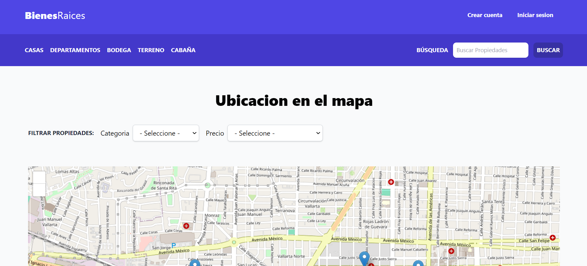
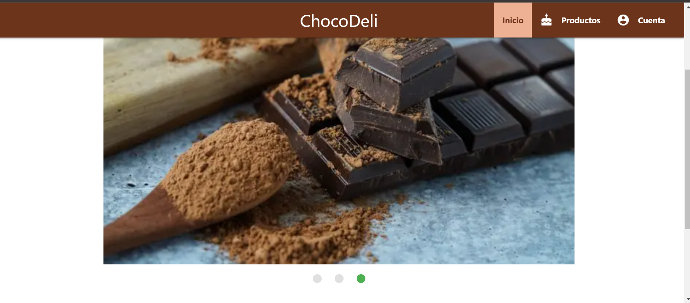
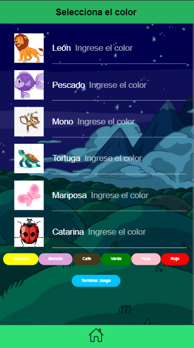

<section class="flex justify-center items-center py-12 bg-white">
  <div class="flex flex-wrap justify-center gap-6 mx-auto p-12 max-w-screen-x">
    <!-- Proyecto 1 -->
    <a href="https://solf.onrender.com/" class="w-full md:w-1/2 lg:w-1/3">
      <div class="relative flex flex-col items-start m-1 transition duration-300 ease-in-out delay-150 transform bg-gray-800 shadow-2xl rounded-xl hover:-translate-y-4">
        
        <div class="px-6 py-8">
          <h4 class="mt-4 text-2xl font-semibold text-white">SOLF</h4>
          <p class="mt-4 text-base font-normal text-white leading-relax">Solf es un sistema de administración de fútbol...</p>
          <span class="text-slate-300">Desarrollado en Node.js, Ionic y Angular</span>
          <br><br>
        </div>
      </div>
    </a>

    <!-- Proyecto 2 -->
    <a href="https://github.com/denisse-08/Practicas-Node/tree/main/BienesRaices_MVC" class="w-full md:w-1/2 lg:w-1/3 bg-white">
      <div class="relative flex flex-col items-start m-1 transition duration-300 ease-in-out delay-150 transform bg-gray-800 shadow-2xl rounded-xl hover:-translate-y-4">
        
        <div class="px-6 py-8">
          <h4 class="mt-4 text-2xl font-semibold text-white">Bienes Raíces</h4>
          <p class="mt-4 text-base font-normal text-white leading-relax">Sistema que se encarga de publicar y mostrar propiedades...</p>
          <span class="text-slate-300">Desarrollado con la arquitectura MVC en Node.js</span>
        </div>
      </div>
    </a>

    <!-- Proyecto 3 -->
    <a href="https://github.com/denisse-08/chocolate" class="w-full md:w-1/2 lg:w-1/3 bg-white">
      <div class="relative flex flex-col items-start m-1 transition duration-300 ease-in-out delay-150 transform bg-gray-800 shadow-2xl rounded-xl hover:-translate-y-4">
        
        <div class="px-6 py-8">
          <h4 class="mt-4 text-2xl font-semibold text-white">Chocolateria</h4>
          <p class="mt-4 text-base font-normal text-white leading-relax">Es una aplicacion para una chocolateria, la cual tiene integrado un servicio de notificaciones, autenticacion</p>
          <span class="text-slate-300">PWA realizada en Laravel, usando material desing para el diseño</span>
          <br><br>
        </div>
      </div>
    </a>

    <!-- Proyecto 4 -->
    <a href="https://github.com/denisse-08/GameColor" class="w-full md:w-1/2 lg:w-1/3 bg-white">
      <div class="relative flex flex-col items-start m-1 transition duration-300 ease-in-out delay-150 transform bg-gray-800 shadow-2xl rounded-xl hover:-translate-y-4">
        
        <div class="px-6 py-8">
          <h4 class="mt-4 text-2xl font-semibold text-white">GameColor</h4>
          <p class="mt-4 text-base font-normal text-white leading-relax">Pequeño videjuego para aprender a identificar los colores con animales</p>
          <span class="text-slate-300">Realizado con ionic</span>
          <br><br><br>
        </div>
      </div>
    </a>
  </div>
</section>
